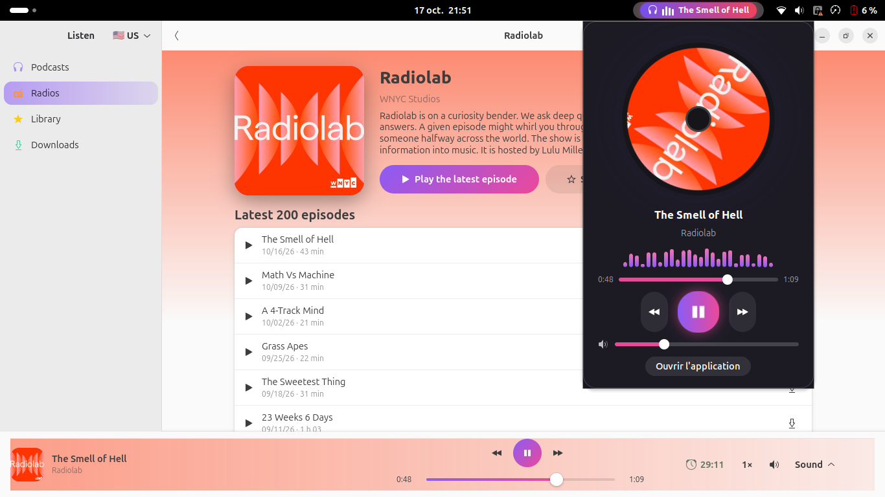
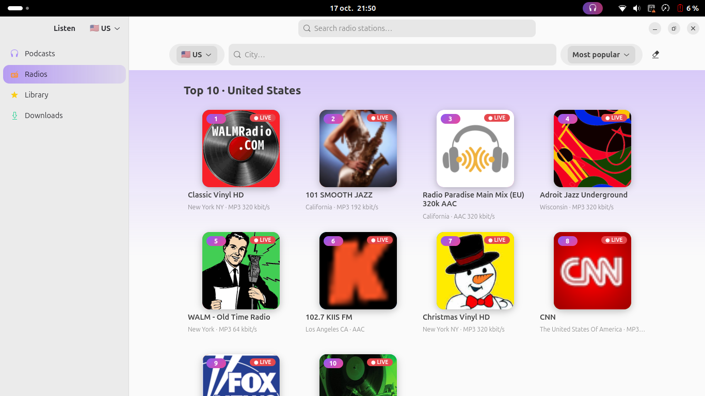
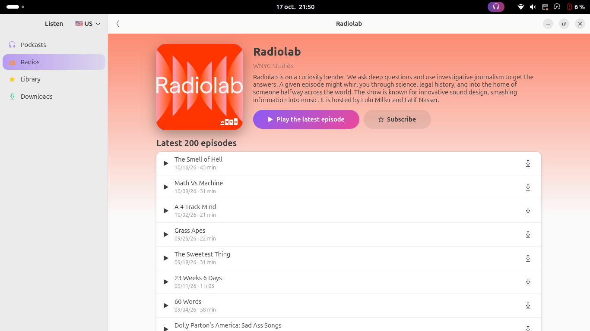
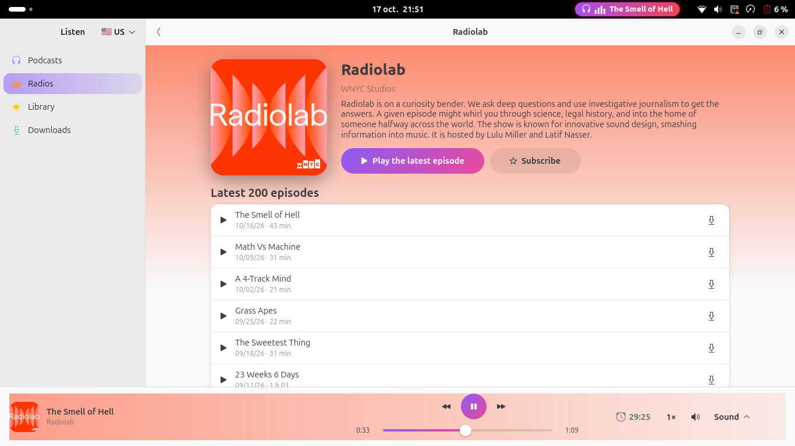
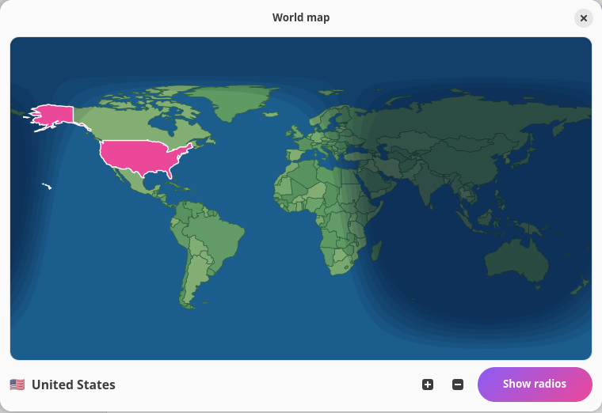
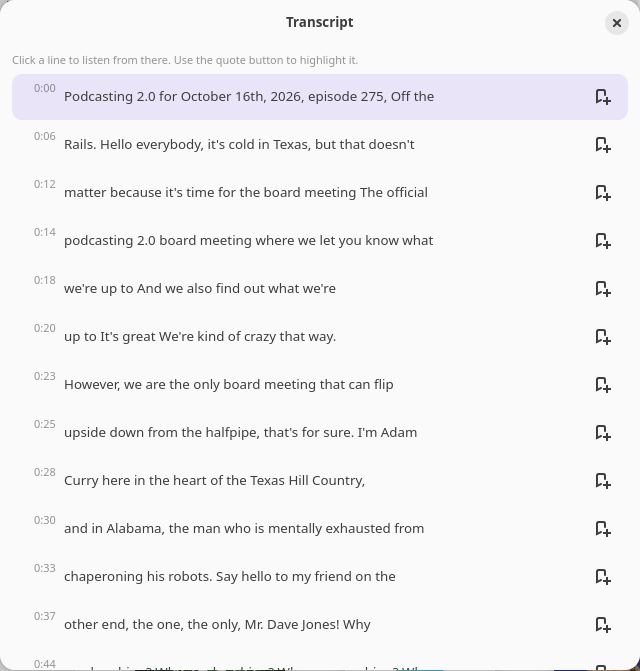
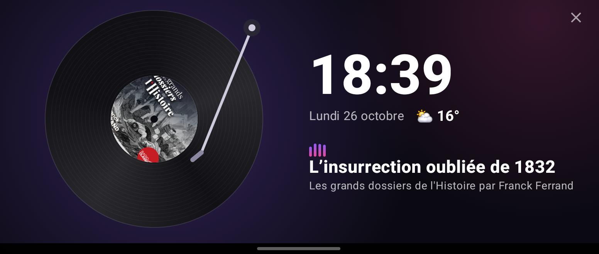
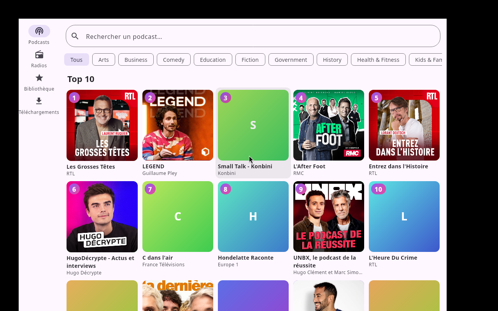

Podcasts and live radio,in one free app.
Listen to podcasts and radio stations from every country. Download episodes for offline listening. No account, no tracking, fully open source.

Everything you listen to, in one place
Podcasts, radio and offline listening, with the small details that make a player pleasant.
Live radio worldwide
Browse stations by country, city or on a world map. Duplicates are removed, favorites are one click away.
Private by design
No account, no tracking, no server of ours. Your library stays on your device.
Podcasts
Top 10 by country and genre, search, subscriptions, and a badge when a new episode arrives.
Genres and webradios
Browse radios by genre and sub-genre, or open a brand to find all its webradios, in dozens of countries.
Offline listening
Download episodes by hand or automatically. Cover art is kept too. Cancel any time.
Find the right episode
Sort newest or oldest, and show only downloaded or unfinished episodes.
Sleep timer
Stop after minutes, hours or at the end of the episode, with a gentle volume fade-out.
Speaks your language
English, French, Spanish, German, Portuguese, Hebrew and Arabic, including right-to-left layout.
A player in your top bar
On GNOME, an animated pill with a spinning vinyl, a live spectrum, progress and volume.
A live world map
Tap a country to hear its radios. The map shows day and night in real time.
Transcripts and quotes
Read the published transcript while you listen, tap a line to jump there, highlight sentences and keep your quotes with notes. Works with right-to-left and Asian scripts.
Android Auto
The Android app shows your podcasts, radios and downloads in the car, with no Google dependency.
Home-screen widgets
On Android, a compact widget with the cover and controls, or a vinyl that spins while it plays.
Never miss an episode
A badge on the podcasts you follow, a notification when a new episode is out, and a mark on what you have finished.
See it in action
Real screenshots of Podial. Click one to enlarge it.







Get Podial
One project, four platforms. Linux is the most polished; the others are pre-releases.
Linux, Windows, macOS and Android are trademarks of their respective owners. Logos from Simple Icons (CC0).
What's next
Planned, not built yet.
- Record live radio, with scheduling
- Local transcription for episodes without one, and search inside episodes
- Listen to a podcast in another language, with translated subtitles
- Sync between devices without an account
- Radio schedules for more stations